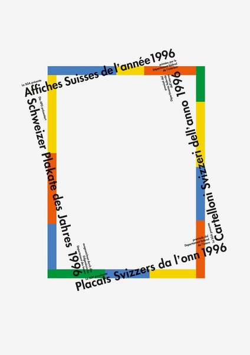
CRVI002858Rosmarie Tissi - Schweizer Plakate des Jahres 1996
1996
1996
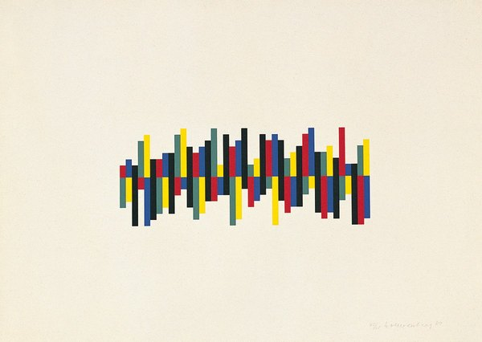
CRVI003214Verena Loewensberg - Untitled
1982
1982

CRVI002797Karl Gerstner - Wie sieht eine technische Revolution aus?

CRVI002516Josef Müller-Brockmann - musica viva
1959
1959

CRVI001491Sophie Taeuber-Arp - Dada Head
1920
1920

CRVI002682Kazumasa Nagai - Japanische Plakate – heute
2006
2006
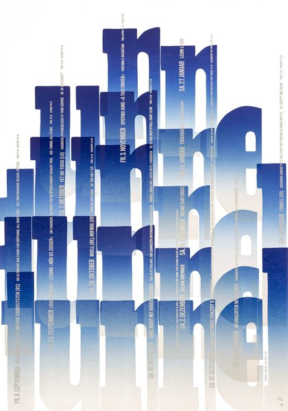
CRVI002930Dafi Kühne - Tunnel 2
2023
2023

CRVI002519Josef Müller-Brockmann - Helmhaus Zürich: Aus der Sammlung des Kunsthauses Zürich, Neuere Schweizer Kunst
1953
1953
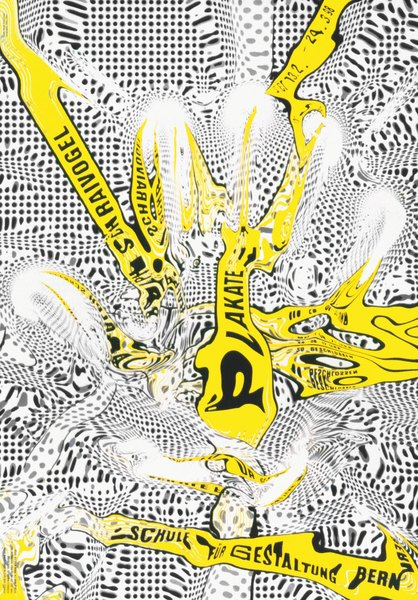
CRVI002937Ralph Schraivogel - Schraivogel Plakate — Schule für Gestaltung Bern
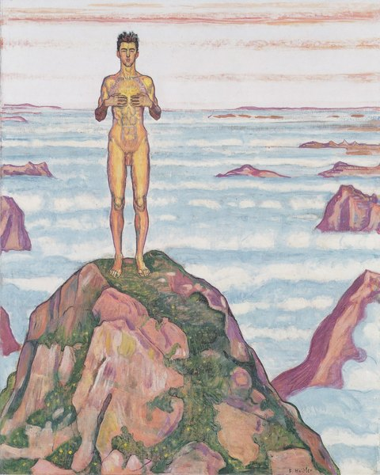
CRVI003047Ferdinand Hodler - Blick ins Unendliche
1903
1903

CRVI002826George Giusti - Graphis Annual 59/60
1959
1959

CRVI002513Josef Müller-Brockmann - Juni-Festwochen Zürich 1959
1959
1959
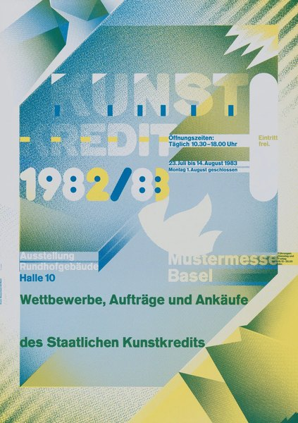
CRVI002805Wolfgang Weingart - Kunstkredit 1982/83
1983
1983
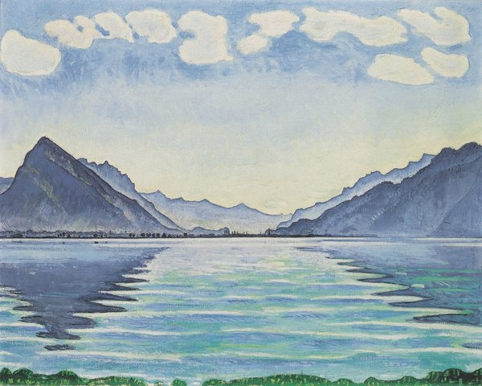
CRVI003044Ferdinand Hodler - Thunersee mit symmetrischer Spiegelung
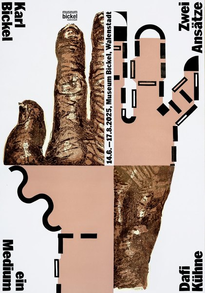
CRVI002928Dafi Kühne - Karl Bickel — Zwei Ansätze, ein Medium
2025
2025

CRVI002056Nicolas Party - Untitled

CRVI002794Unattributed - zürcher maler, Kunsthalle Basel

CRVI002795Unattributed - Japanische Kalligraphie und westliche Zeichen, Kunsthalle Basel

CRVI002800Siegfried Odermatt - Untitled (ampersand)

CRVI002829Roger Excoffon - Graphis Annual 66/67
1966
1966

CRVI002514Josef Müller-Brockmann - Opernhaus Zürich: Cavalleria rusticana / I Pagliacci
1973
1973

CRVI002828George Giusti - Graphis Annual 63/64
1963
1963

CRVI002845Walter Ballmer - Stile Olivetti
1961
1961
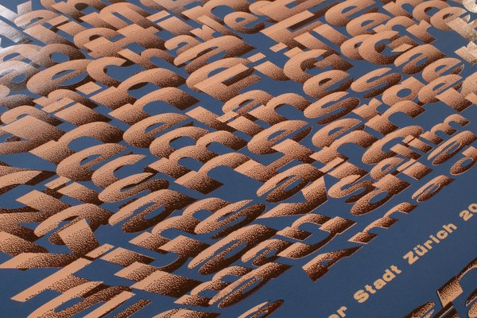
CRVI002933Dafi Kühne - Kunststipendien
2021
2021
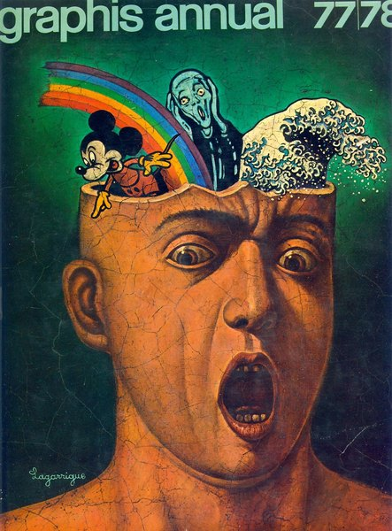
CRVI002851Unattributed - Graphis Annual 77/78
1977
1977

CRVI002825Franco Grignani - Graphis Annual 67/68
1967
1967

CRVI002510Josef Müller-Brockmann - Juni-Festwochen Zürich 1957
1957
1957
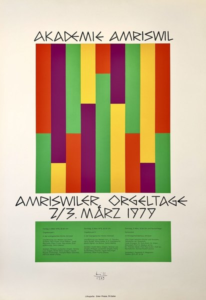
CRVI003240Max Bill - Untitled
Original lithographic poster · 1979
Original lithographic poster · 1979
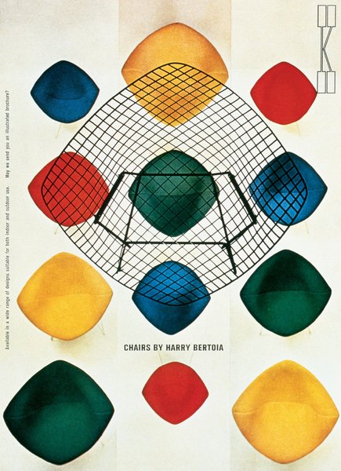
CRVI002790Herbert Matter - Chairs by Harry Bertoia
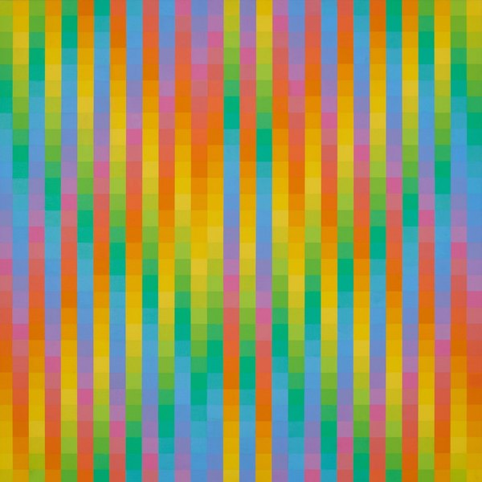
CRVI003210Richard Paul Lohse - 30 vertikale systematische Farbreihen mit roten Diagonalen
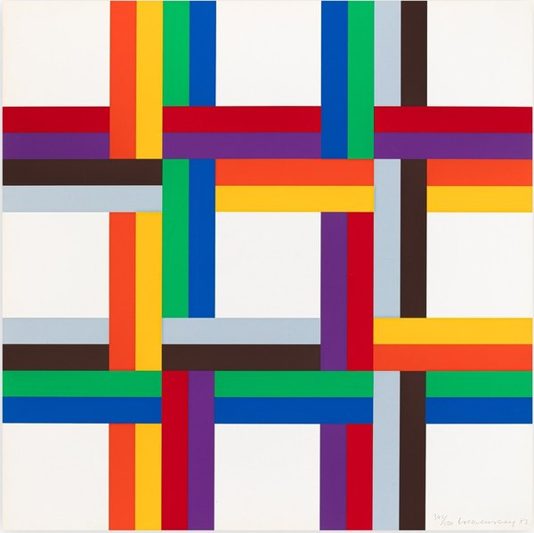
CRVI003215Verena Loewensberg - Ohne Titel
1980
1980
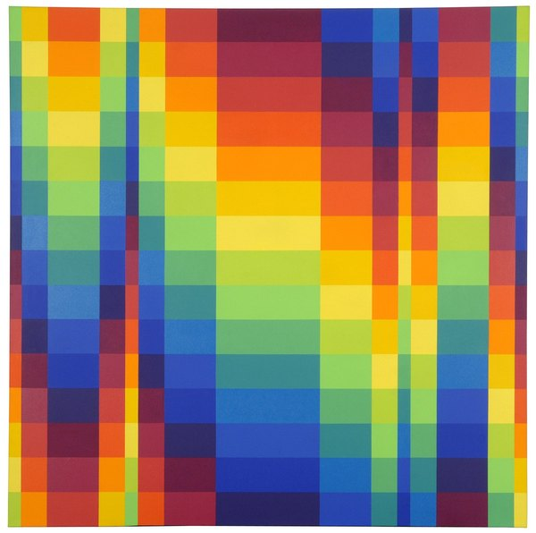
CRVI003211Richard Paul Lohse - Untitled

CRVI002808Rosmarie Tissi - Offset, for Anton Schöb
1982
1982

CRVI000123Shigeo Fukuda - Jazz Festival Montreux
19e Festival de Jazz Montreux, 5–20 juillet 1985 · 100 x 70 cm · 1985
19e Festival de Jazz Montreux, 5–20 juillet 1985 · 100 x 70 cm · 1985
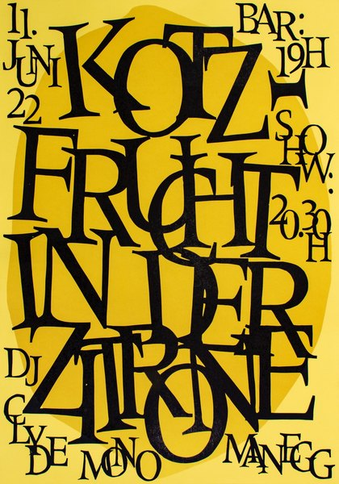
CRVI002932Dafi Kühne - Kotzfrucht in der Zitrone
2022
2022
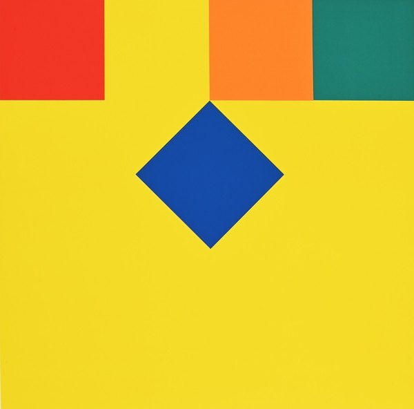
CRVI003172Camille Graeser - Translokation
1970
1970
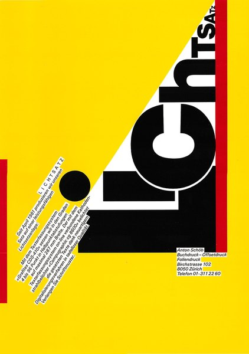
CRVI002799Siegfried Odermatt - Licht

CRVI002806Rosmarie Tissi - UCLA Extension
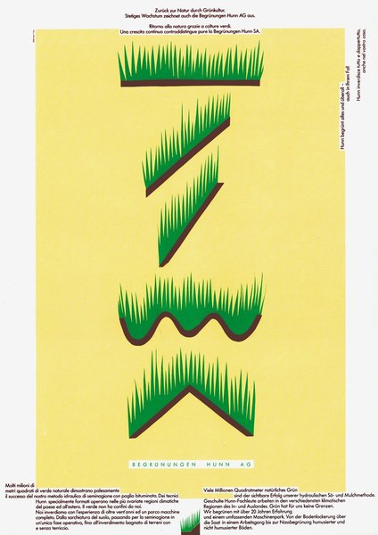
CRVI002861Rosmarie Tissi - Begrünungen Kuhn AG
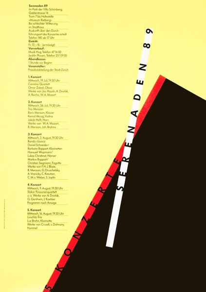
CRVI002938Siegfried Odermatt - Serenaden 89
1989
1989

CRVI002811Rosmarie Tissi - Fotosatz / Offset, for Anton Schöb
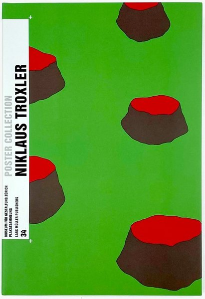
CRVI003183Niklaus Troxler - Niklaus Troxler: Poster Collection 34
Book cover
Book cover
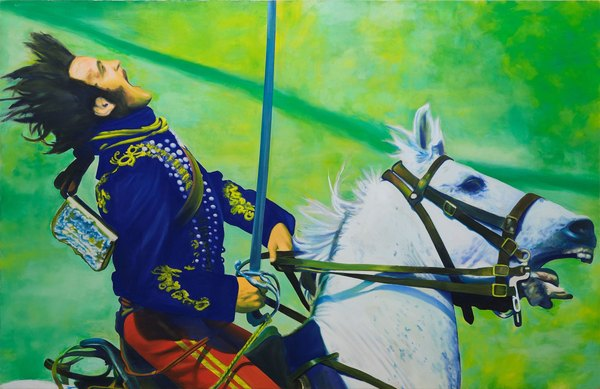
CRVI003041Franz Gertsch - Huaa…!
1969
1969

CRVI001645Cuno Amiet - Blumengarten
1936
1936

CRVI002936Ralph Schraivogel - poster
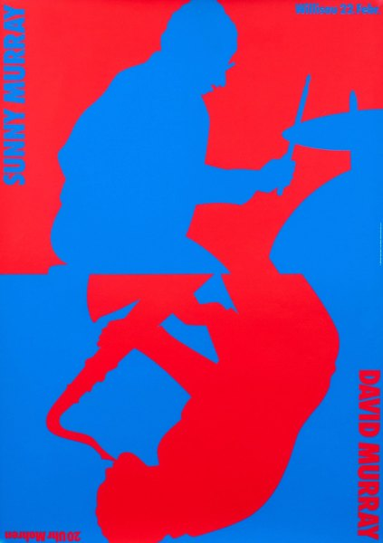
CRVI003184Niklaus Troxler - Untitled

CRVI002812Rosmarie Tissi - World City Expo Tokyo '96
1994
1994
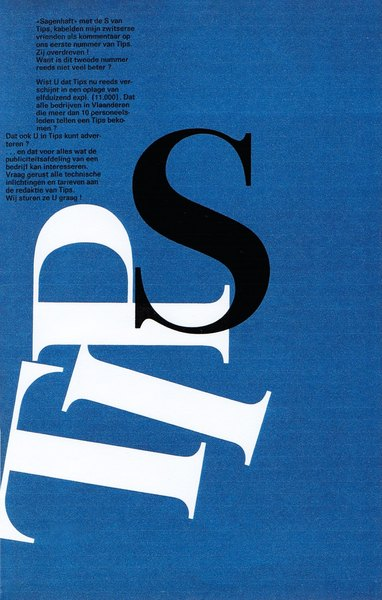
CRVI002863Rosmarie Tissi - Tips
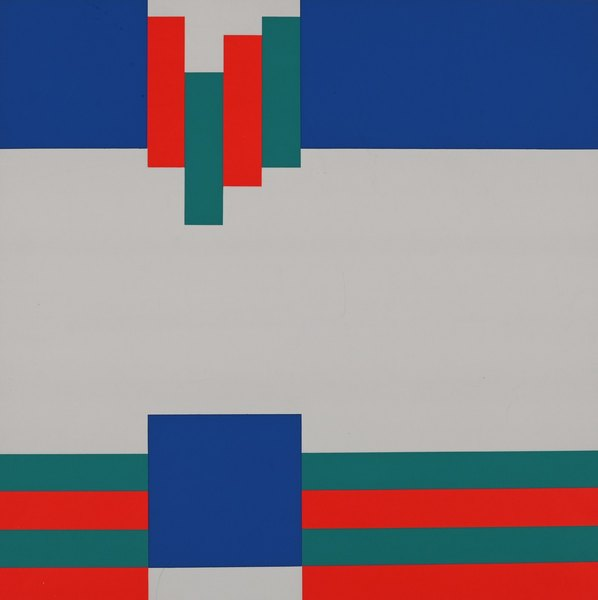
CRVI003171Camille Graeser - Permutation
1969
1969

CRVI002802Rosmarie Tissi - Serenaden 96
1996
1996

CRVI002807Rosmarie Tissi - Serenaden 93
1993
1993

CRVI001644Cuno Amiet - Moonlit Landscape
1904
1904

CRVI002523Josef Müller-Brockmann - Strawinsky / Fortner / Berg (blue printing)
1955
1955
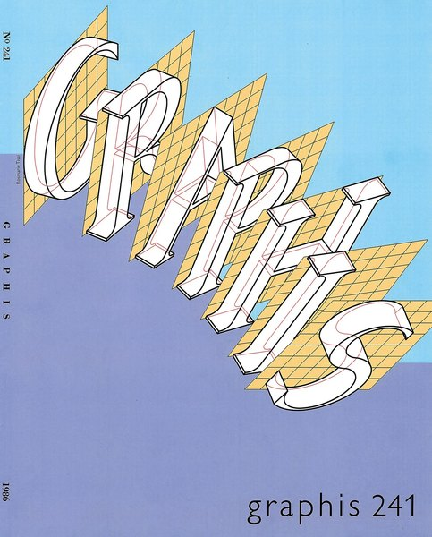
CRVI002862Rosmarie Tissi - Graphis 241
1986
1986
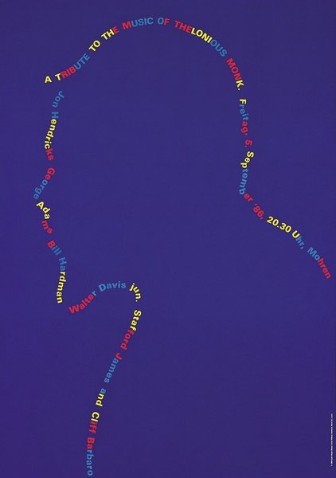
CRVI003182Niklaus Troxler - Monk
Jazz poster · 1986
Jazz poster · 1986

CRVI002521Josef Müller-Brockmann - Opernhaus Zürich: Die schalkhafte Witwe
1971
1971
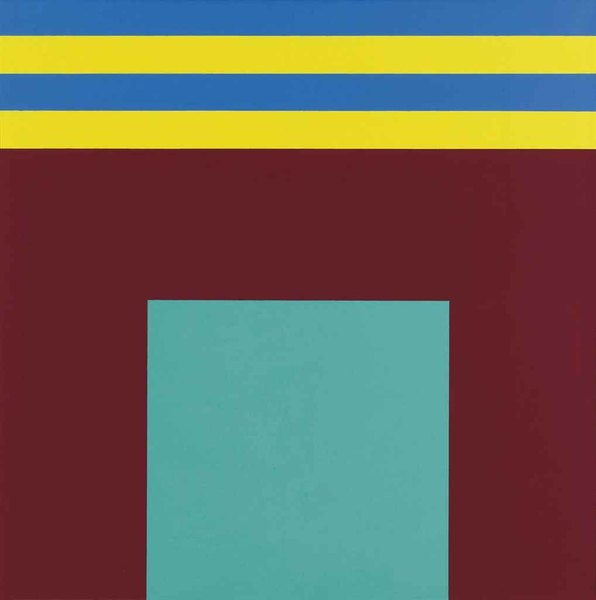
CRVI003170Camille Graeser - Summand-Konstruktion D
1974
1974

CRVI002796Josef Müller-Brockmann - musica viva

CRVI001112El Lissitzky - Die Kunstismen / Les Ismes de l’Art / The Isms of Art, 1914–1924
Book cover · edited by El Lissitzky and Hans Arp · Eugen Rentsch, Erlenbach-Zürich · 1925
Book cover · edited by El Lissitzky and Hans Arp · Eugen Rentsch, Erlenbach-Zürich · 1925
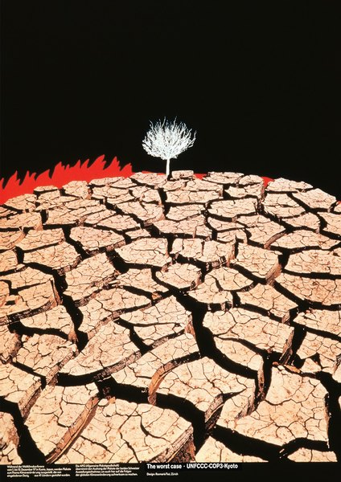
CRVI002857Rosmarie Tissi - The Worst Case — UNFCCC-COP3-Kyoto
1997
1997

CRVI002827Yusaku Kamekura - Graphis Annual 60/61
1960
1960

CRVI002798Rosmarie Tissi - Serenaden 92
1992
1992

CRVI002935Ralph Schraivogel - poster
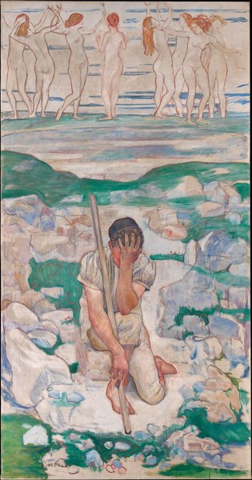
CRVI003048Ferdinand Hodler - Der Traum des Hirten
1896
1896
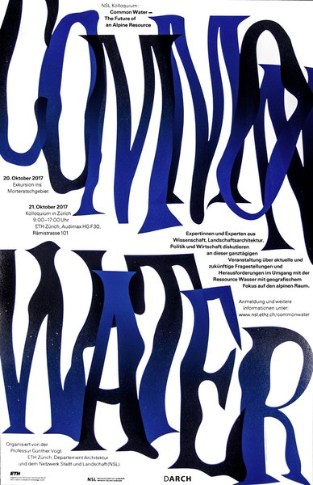
CRVI002922Dafi Kühne - Common Water — The Future of an Alpine Resource
2017
2017

CRVI002810Rosmarie Tissi - Internationale Musikfestwochen Luzern
1994
1994

CRVI003049Ferdinand Hodler - painting

CRVI002241unattributed - Johannes Itten

CRVI002225László Moholy-Nagy - Oskar Schlemmer in Ascona
1926
1926

CRVI002859Rosmarie Tissi - 31. Schaffhauser Jazzfestival
2020
2020

CRVI002803Rosmarie Tissi - Serenaden 98
1998
1998
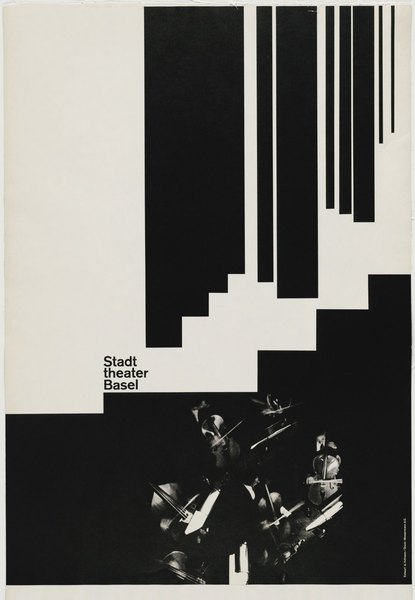
CRVI002793Armin Hofmann - Stadttheater Basel

CRVI002512Josef Müller-Brockmann - Automobil-Club der Schweiz: schützt das Kind!
1953
1953

CRVI002396Bruce Nauman - Leaping Foxes
2018
2018
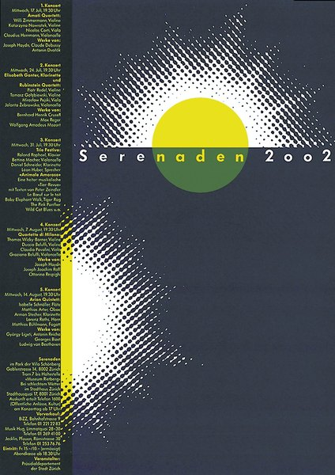
CRVI002860Rosmarie Tissi - Serenaden 2002
2002
2002
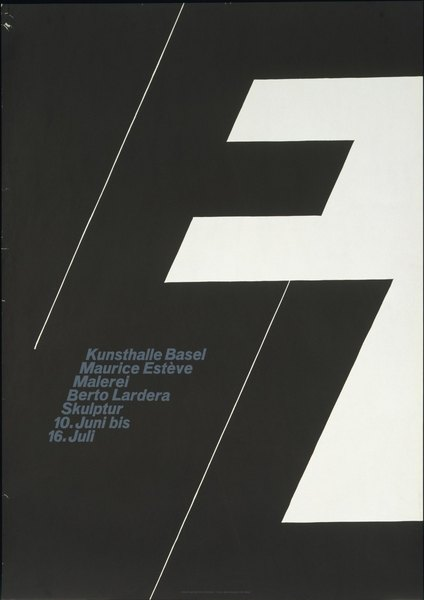
CRVI002791Armin Hofmann - Kunsthalle Basel: Maurice Estève, Berto Lardera

CRVI002931Dafi Kühne - Dead Ghosts (CAN)
2014
2014
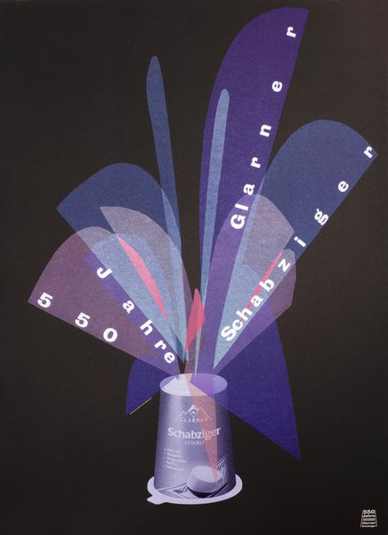
CRVI002929Dafi Kühne - 550 Jahre Glarner Schabziger

CRVI002511Josef Müller-Brockmann - der Film
1960
1960

CRVI002518Josef Müller-Brockmann - Strawinsky / Fortner / Berg
1955
1955
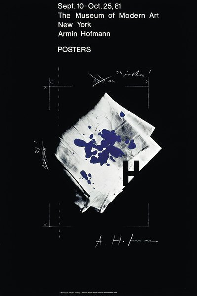
CRVI002792Armin Hofmann - Armin Hofmann: Posters, The Museum of Modern Art
1981
1981